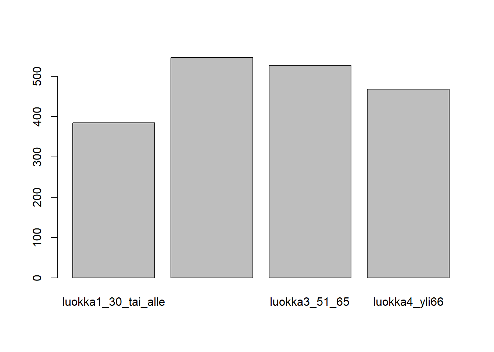

3 Harjoituskerta 3
| Osa | Käsiteltävät asiat (viitteellinen asiasisältö, muutoksia voi tulla) |
| 1 | RStudioon ja R-kieleen tutustuminen |
| 2 | Aineiston kuvailu: frekvenssijakauma, tunnusluvut, kuviot, osa-aineiston poimiminen ja aineston ryhmittäinen tarkastelu |
| 3 | Yksinkertaiset muuttujamuunnokset, kahden muuttujan välinen yhteisvaihtelu, ristiintaulukointi |
| 4 | Korrelaatiot ja hajotakuvio, summamuuttujan tekeminen |
| 5 | Keskiarvotestit: t-testi ja ANOVA |
| 6 | Kertausta ja ohjausta ryhmätehtävään |
3.1 Muuttujien muunnokset
- Alkuperäisiä muuttujia muunnetaan tai luokitellaan uudelleen
- Tavoitteena on esim. aineiston kuvailun tai analysoinnin helpottuminen / mahdollistaminen ja tulkintojen helpottuminen
- Esimerkiksi: aineistossa saatavilla oleva muuttuja on vastaajan syntymävuosi, mutta haluamme raportoida vastaajan iän → syntymävuosimuuttuja muunnetaan kuvaamaan vastaajan ikää
- Toinen esimerkki 2: muuttuja tulee luokitella ennen ristiintaulukointia → jatkuva ikämuuttuja muunnetaan ikäryhmiä kuvaavaksi muuttujaksi
- Usein käytettyjä muuttujamuunnoksia on myös uudelleenkoodaus (recode)
- Uudelleenkoodatessa muuttujia alkuperäisen muuttujan arvot vaihdetaan uusiin arvoihin
- Tarpeen esim. kun halutaan kääntää alkuperäisen muuttujan “suunta” = pienet arvot muutetaan suuriksi arvoiksi ja päinvastoin. Huom! tärkeää summamuuttujia luodessa
- Muuttujan uudelleenluokittelu (yhdistetään muuttujan luokkia)
- Muuttujan luokkia yhdistetään usein silloin, kun luokassa on liian vähän havaintoja
- Esim. Khiin nekiön testin oletukset eivät toteudu → Yhdistetään frekvenssiltään pienimmät luokat
- Luokkien yhdistämisellä täytyy aina olla myös sisällöllisiä / teoreettisia perusteluja
- Uudelleenkoodatessa muuttujia alkuperäisen muuttujan arvot vaihdetaan uusiin arvoihin
3.2 Aineiston luominen
Seuraavassa muodostetaan kurssin aineisto yhdeksi datakehikoksi. Tulostetaan ensin muuttujien nimet, josta poimitaan tarvittavat.
colnames(ess)## [1] "fsd_no" "fsd_vr" "fsd_id" "fsd_li" "a1_min" "a2" "a3_min" "a4"
## [9] "a5" "a6" "b1" "b2" "b3" "b4" "b5" "b6"
## [17] "b7" "b8" "b9" "b10" "b11" "b12" "b13" "b14"
## [25] "b15" "b16" "b17" "b18" "b19" "b20" "b21" "b22"
## [33] "b23" "b24" "b25" "b26" "b27" "b28" "b29" "b30"
## [41] "b31" "b32" "b33" "b33a" "b34" "b35" "b36" "b37"
## [49] "b38" "b39" "b40" "b41" "b42" "b43" "c1" "c2"
## [57] "c3" "c4" "c5" "c6" "c7" "c8" "c9" "c10"
## [65] "c11" "c12" "c13" "c14" "c15" "c16" "c17" "c18"
## [73] "c19_1" "c19_2" "c19_3" "c19_4" "c19_5" "c19_6" "c19_7" "c19_8"
## [81] "c19_9" "c19_10" "c20" "c22" "c24" "c25_1" "c25_2" "c26"
## [89] "c27" "c29" "c32" "c33" "c34" "c35" "c36" "c37"
## [97] "c38" "c39" "c40" "c41" "c42" "c43" "c44" "d1"
## [105] "d2" "d3" "d4" "d5" "d6" "d7" "d8" "d9"
## [113] "d10" "d11" "d12" "d13" "d14" "d15" "d16" "d17"
## [121] "d18" "d19" "d21" "d22" "d23" "d24" "d25" "d26"
## [129] "d27" "d28" "d29" "d30" "d31" "d32" "e1" "e2"
## [137] "e3" "e4" "e5" "e6" "e7" "e8" "e9" "e10"
## [145] "e11" "e12" "e13" "e14" "e15" "e16" "e17" "e18"
## [153] "e20" "e21" "e22" "e23" "e24" "e25" "e26" "e27"
## [161] "e28" "e29" "e30" "e31" "e32" "e33" "e34" "e35"
## [169] "e36" "e37" "e38" "e39" "e40" "e41" "f1" "sukupuoli"
## [177] "f3_1" "f1_2" "f2_2" "f3_2" "f4_2" "f1_3" "f2_3" "f3_3"
## [185] "f4_3" "f1_4" "f2_4" "f3_4" "f4_4" "f1_5" "f2_5" "f3_5"
## [193] "f4_5" "f1_6" "f2_6" "f3_6" "f4_6" "f1_7" "f2_7" "f3_7"
## [201] "f4_7" "f5" "f6" "f7" "f8" "f9" "f10" "sivsaat"
## [209] "f12" "f13" "f14" "f15" "f16" "f17a_1" "f17a_2" "f17a_3"
## [217] "f17a_4" "f17a_5" "f17a_6" "f17a_7" "f17a_8" "f17a_9" "f17b" "f17c"
## [225] "f17d" "f18" "f19" "f20" "f21" "f22" "f23" "f24"
## [233] "f25" "f26" "f27" "f28" "f29" "f30" "f31" "f32"
## [241] "f33" "f35" "f36" "f37" "f38" "f39" "f40" "f41"
## [249] "f42" "f43" "f44" "f45a_1" "f45a_2" "f45a_3" "f45a_4" "f45a_5"
## [257] "f45a_6" "f45a_7" "f45a_8" "f45a_9" "f45b" "f45c" "f45d" "f46"
## [265] "f47" "f50" "f51" "f52" "f53" "f55" "f56" "f57"
## [273] "f59" "f60" "f61_1" "f61_2" "h1a" "h1b" "h1c" "h1d"
## [281] "h1e" "h1f" "h1g" "h1h" "h1i" "h1j" "h1k" "h1l"
## [289] "h1m" "h1n" "h1o" "h1p" "h1q" "h1r" "h1s" "h1t"
## [297] "h1u" "i1" "i2" "i3" "i4" "i5" "i6" "i7"
## [305] "i8" "i9" "i10" "bv1" "paino" "ilmasto" "terveys" "turvallisuus"
## [313] "koulutus" "asuinymp" "elake" "ikä" "c_muut" "ikäluok"aineisto <- ess[, c("a3_min", "b26", "b27", "b6", "b7", "b8", "b9", "b10", "b11", "b12", "c1", "c6", "c7", "d24", "e4", "sivsaat", "f14", "f15", "f17a_6", "sukupuoli")]
colnames(aineisto)## [1] "a3_min" "b26" "b27" "b6" "b7" "b8" "b9" "b10" "b11" "b12"
## [11] "c1" "c6" "c7" "d24" "e4" "sivsaat" "f14" "f15" "f17a_6" "sukupuoli"Tarkastellaan seuraavaksi aineistoa ja erityisesti muuttujien maksimiarvoja, jotka kertovat siitä, ovatko puuttuvat arvot asetettu oikein.
summary(aineisto)## a3_min b26 b27 b6 b7 b8 b9
## Min. : 0.0 Min. : 0.000 Min. : 0.000 Min. : 0.000 Min. : 0.000 Min. : 0.000 Min. : 0.000
## 1st Qu.: 30.0 1st Qu.: 5.000 1st Qu.: 8.000 1st Qu.: 4.000 1st Qu.: 6.000 1st Qu.: 8.000 1st Qu.: 3.000
## Median :120.0 Median : 6.000 Median : 8.000 Median : 6.000 Median : 8.000 Median : 9.000 Median : 5.000
## Mean :137.1 Mean : 8.583 Mean : 8.072 Mean : 5.894 Mean : 7.746 Mean : 8.316 Mean : 4.981
## 3rd Qu.:180.0 3rd Qu.: 7.000 3rd Qu.: 9.000 3rd Qu.: 7.000 3rd Qu.: 9.000 3rd Qu.: 9.000 3rd Qu.: 6.000
## Max. :630.0 Max. :99.000 Max. :99.000 Max. :99.000 Max. :99.000 Max. :99.000 Max. :99.000
##
## b10 b11 b12 c1 c6 c7 d24
## Min. : 0.000 Min. : 0.000 Min. : 0.000 Min. : 0.000 Min. :1.000 Min. :1.000 Min. :1.000
## 1st Qu.: 3.000 1st Qu.: 4.000 1st Qu.: 5.000 1st Qu.: 8.000 1st Qu.:1.000 1st Qu.:2.000 1st Qu.:3.000
## Median : 5.000 Median : 6.000 Median : 7.000 Median : 8.000 Median :2.000 Median :2.000 Median :3.000
## Mean : 5.241 Mean : 7.367 Mean : 8.361 Mean : 8.145 Mean :1.674 Mean :2.151 Mean :3.074
## 3rd Qu.: 7.000 3rd Qu.: 7.000 3rd Qu.: 8.000 3rd Qu.: 9.000 3rd Qu.:2.000 3rd Qu.:3.000 3rd Qu.:4.000
## Max. :99.000 Max. :99.000 Max. :99.000 Max. :10.000 Max. :9.000 Max. :9.000 Max. :9.000
## NA's :3 NA's :10
## e4 sivsaat f14 f15 f17a_6 sukupuoli
## Min. : 0.00 6 :630 Min. :1.000 Min. : 1.000 Min. :0.0000 1:961
## 1st Qu.: 4.00 4 :230 1st Qu.:2.000 1st Qu.: 4.000 1st Qu.:0.0000 2:964
## Median : 5.00 5 :122 Median :3.000 Median : 5.000 Median :0.0000
## Mean : 5.67 1 : 24 Mean :2.985 Mean : 6.553 Mean :0.3081
## 3rd Qu.: 7.00 2 : 11 3rd Qu.:4.000 3rd Qu.: 9.000 3rd Qu.:1.0000
## Max. :99.00 (Other): 9 Max. :9.000 Max. :15.000 Max. :1.0000
## NA's :899 NA's :2Muuttujat näyttäisivät sisältävän myös puuttuvat arvot, joten muutetaan ne NA -arvolla.
ess$b26[ess$b26 %in% c(98, 99)] <- NA
ess$b27[ess$b27 == 99] <- NA
ess$b6[ess$b6 == 99] <- NA
ess$b7[ess$b7 == 99] <- NA
ess$b8[ess$b8 == 99] <- NA
ess$b9[ess$b9 == 99] <- NA
ess$b10[ess$b10 == 99] <- NA
ess$b11[ess$b11 == 99] <- NA
ess$b12[ess$b12 == 99] <- NA
ess$c1[ess$c1 == 99] <- NA
ess$c6[ess$c6 == 9] <- NA
ess$c7[ess$c7 %in% c(8, 9)] <- NA
ess$d24[ess$d24 %in% c(8, 9)] <- NA
ess$e4[ess$e4 == 99] <- NA
ess$f14[ess$f14 == 9] <- NA
ess$f15[ess$f15 %in% c(98, 99)] <- NAToistaiseksi olemme nojautuneet muuttujien tulkinnoissa data dictionaryyn tai European Social Surveyn koodikirjaan. R tukee myös muuttujien arvojen nimeämistä. Ensimmäisellä harjoituskerralla muutimme joitakin muutimme joitakin muuttujia luokittelu- tai järjestysasteikollisiksi factor()-komennolla. Tässä yhteydessä muuttujan arvoille voidaan määrittää myös sisältö. Tehdään ensin uusi vektori f14-muuttujasta ja tarkastellaan sen sisältöä.
f14 <- factor(aineisto$f14)
table(f14)## f14
## 1 2 3 4 5 9
## 440 243 528 341 371 2Tällaisenaan numerot eivät kerro äkkinäiselle mitään, joten liitetään parilla lisäasetuksella numeroihin arvot helpottamaan niiden tulkitsemista. Huomaa, että seuraava korvaa kysymättä edellä tehdyn muuttujan! Komennossa ensimmäinen asetus, levels, määrittää tasojen määrän ja labels niiden sisällön. Levels voisi olla myös muotoa c(1, 2, 3, 4, 5), mutta määrän kasvaessa oikopolut osoittautuvat arvokkaiksi.
f14 <- factor(aineisto$f14, levels = c(1:5), labels = c("Suuri kaupunki", "Suuren kaupungin lähiö", "Pieni/keskikokoinen kaupunki", "Pienempi taajama", "Maaseutu"))Harjoitus c:
Seuraavassa luokitellaan aiemin luotu luotu ikämuuttuja neljään luokkaan.
ess$ika_luok <- cut(ess$ikä, breaks = c(0, 30, 50, 65, Inf), labels = c("luokka1_30_tai_alle", "luokka2_31_50", "luokka3_51_65", "luokka4_yli66"), include.lowest = TRUE)
# Piirretään kuvaaja
plot(ess$ika_luok)
# Frekvenssijakauma
table(ess$ika_kategorinen)## < table of extent 0 >prop.table(table(ess$ika_kategorinen))## numeric(0)3.3 Ristiintaulukointi
Harjoitus:
Tarkastellaan, onko miesten ja naisten välillä eroa sen suhteen, mikä on korkein koulutus, jonka vastaaja on suorittanut
3.3.1 Ristiintaulukointi ja \(\chi^2\)-testi
- Tutkitaan onko parisuhdestatuksella (tilastollista) yhteyttä siihen, miten kokee kotitalouden tulojen riittävyyden.
- Tee ristiintaulukko muuttujista:
- [F2_1] Vastaajan sukupuoli ja [C6] Kuinka turvalliseksi tunnet olosi kävellessäsi yksin illalla asuinalueellasi? ja testaa mahdollisen eron tilastollinen merkitsevyys Khiin neliön testillä
- Jos testitulos antaa aihetta uskoa, että nollahypoteesi voidaan hylätä (jos p<0.05), todetaan, että muuttujien välillä on yhteys perusjoukossa.
- H0: Muuttujat ovat toisistaan riippumattomia
- H1: Muuttujien välillä on riippuvuutta
- Lue myös Ristiintaulukon riippumattomuustesti
table(df$C6)##
## Erittäin turvalliseksi Turvalliseksi Turvattomaksi Erittäin turvattomaksi Kieltäytyy
## 845 918 136 20 0
## EOS
## 6# Tiputetaan tässä vaiheessa pois faktoritaso "Kieltäytyy", koska siinä ei ole havaintoja
levels(df$C6)[5] <- NA
turv_sp <- table(df$C6, df$F2_1)
# Tehdään khiin neliötesi
chisq.test(turv_sp)## Warning in chisq.test(turv_sp): Chi-squared approximation may be incorrect##
## Pearson's Chi-squared test
##
## data: turv_sp
## X-squared = 185.13, df = 4, p-value < 2.2e-16# Huomaa varoitus
# Poistetaan myös luokka EOS
levels(df$C6)[5] <- NA
turv_sp <- table(df$C6, df$F2_1)
prop.table(turv_sp, 2)##
## Mies Nainen
## Erittäin turvalliseksi 0.578125000 0.302398332
## Turvalliseksi 0.395833333 0.561001043
## Turvattomaksi 0.021875000 0.119916580
## Erittäin turvattomaksi 0.004166667 0.016684046# Tehdään testi uudestaan
chisq.test(turv_sp)##
## Pearson's Chi-squared test
##
## data: turv_sp
## X-squared = 182.47, df = 3, p-value < 2.2e-16